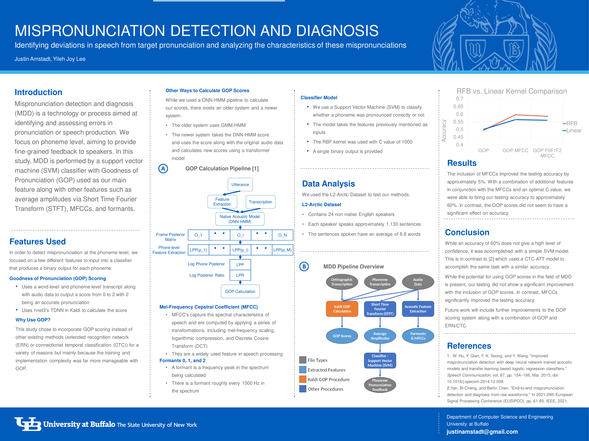

Resume
Programming Projects
- Japanese Accent Reduction Tool Using AI (In production)
- Moving ocean with rain and fog generated with OpenGL in C++ (video on my website). More OpenGL projects are available on my website
- Nethack-inspired 2D game in C++
- Wire simulator in Java
- My website made using with HTML and CSS
- Cryptocurrency trading simulator and real-time data collector in Python
Professional Summary
Beginning with my path to fluency in Japanese, I have continually sought out difficult subjects to learn and master in an efficient manner. This mindset has given me the ability to grow rapidly in the fields of Computer Graphics and Machine Learning while also leading me to start a thriving private Japanese tutoring business that I run solely.
My portfolio demonstrates my ability to learn difficult, brand new topics through hard work, smart thinking, and a calm mind in the face of an overwhelming amount of knowledge required to become proficient.
Education
- Majoring in Computer Science
- I am fluent in Japanese (mostly self-taught)
- Spent 6 months in Tokyo in 2019 learning in a Japanese Language School
- Have strong experience in C++, Python, and Java with additional experience in HTML and CSS. I will use any language required to do what I need
- I use a dual boot system of Ubuntu and Windows 10 with Ubuntu being my primary OS
- GPA – 3.9 (4.0 in STEM classes)
Work Experience
AI-based Linguistic Feature Extraction University at Buffalo Internship
- I was a part of a research group under a professor for 10 weeks during the summer of 2023
- The goal of my project is to use AI-based methods to extract relevant information from speech data for the purpose of disease detection
- My specific role was Mispronunciation Detection and Diagnosis (MDD) with another undergrad as a partner
- I was responsible for training a replacement to do my job when I left
- A variety of data science techniques and machine learning models involving support vector machines, transformers, acoustic models, and forced-alignment were used as a part of the project
Private Online Japanese Tutor
- I manage every aspect of my business alone
- My advertising is done online through different services and also through my website
- When a student contacts me, we discuss how they would like to be taught, their goals, etc. My goal is to make the student happy and satisfied with what they are receiving
- Students generally pay on a per-lesson basis electronically. All payments are monitored by me
- I managed a group lesson with three separate kids. Managing kids with separate schedules and work ethics was a challenging and rewarding work experience
- When lessons do not go to plan I have to improvise to provide an interesting and helpful lesson to my students
- Lessons happen at the same time every week as agreed upon unless otherwise notified. I require 24 hours notice of any cancellation. Students are sent a reminder email the day of the lesson
- Every student has a unique lesson plan due to differing goals and preferences in their learning method, but a student always starts with the basic writing system (kana) followed by basic grammar and other language learning advice
Helping with a Programming Judge
- My teacher uses a custom judge that works similar to sites such as Leetcode and Hackerrank that I help him with
- My primary task is to solve problems on my own relating to data structures or other essential programming topics and make a similar problem for the judge
- I rewrite the problem I intend to upload to adjust for difficulty and clearness
- Using a Python script, I create 10 inputs in a csv file, feed it into a Java program, read the output of the Java program, and write the output onto the csv file while also generating the necessary files automatically
- For each problem I write a sample solution in both C++ and Java